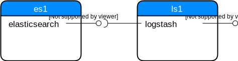

Elastic Stack (formerly ELK) - Logstash
abstract
Some notes:
- Logging as a Service with Elastic Cloud Enterprise
- data flow pipelines (pipe to pipe to pipe)
- independent pipelines in one Logstash instance
- “beats” protocol
- “event” is the primary unit which gets sent to Logstash
- “workers” scale out the processing
- in-memory queue vs. persistent queue
- “at least once” delivery (err on the side of duplication)
- codecs serialize and deserialize
json_linescodecs is available # non-humandissectis the “smaller version” ofgrok(delimiter vs regex)- kibana can monitor Logstash and Elasticsearch # not sure
- Logstash has an external REST API for metrics
| Date | Change description |
|---|---|
| TODO | The first release |
Intro
This is the second part of a multi-part series about the Elastic Stack (formerly known as the ELK stack). This stack consists of 3 parts:
- storing data with Elasticsearch
- ingesting data with Logstash (and/or Beats)
- visualizing data with Kibana
This post will focus on the second part, Logstash. Logstash uses Elasticsearch as storage back-end in this post, so you might want to read the previous post about it at Elastic Stack (formerly ELK) - Elasticsearch.
I’ll use a virtualized environment which looks like this:
{kind=link}
- Server
es1contains the Elasticsearch service which provides a REST API at port9200. - Server
ls1contains the Logstash service which provides a REST API at port9600. The Logstash service will use the REST API of Elasticsearch to store the logs.
Skip the next section if you don’t want to repeat the steps locally.
Set up the environment
To reproduce the steps in this post, you need to have installed locally:
After these prerequisites are fulfilled:
- download the compressed
project source files. - extract the archive
- change to the
envdirectory - start the Vagrant setup
1 2 3 4 | $ wget http://www.markusz.io/_downloads/elastic-stack-elk-logstash.tar.gz
$ tar -zxvf elastic-stack-elk-logstash.tar.gz
$ cd env
$ vagrant up # does also all of the installation
|
After this is fully done, you can access these two servers with:
1 2 3 4 | $ vagrant ssh es1 # log into the elasticsearch server
[vagrant@es1] $ exit # log out
$ vagrant ssh ls1 # log into the logstash server
[vagrant@ls1] $ exit # log out
|
Note
After you decided that you don’t need this environment anymore,
you can remove it with vagrant destroy -f
While the setup goes on for a minute or two, let’s have a look at a few basic terms and concepts of Logstash.
Terms and Concepts
Logstash has a concept of pipelines. It reads data from a source, optionally transforms and/or filters out the data and writes the data to a data sink. The pipelines are configured with these three steps
- the
input - the
filter - the
output

This allows to have multiple pipelines in parallel, or let the output from one pipelines be the input for another pipeline. It’s the very same idea like in a shell.
Every atomic input such a pipeline can read is called an event.
The filter step can transform such events to a different format
or even filter out some events. This makes Logstash very flexible and you
can adjust it to your data.
Basic interaction with Logstash
As shown in the beginning, Logstash has a REST API to get some stats
from it. Logstash needs to bind to an IP address you can reach from
outside the server. In my virtual environment, I have this setting
in the file /etc/logstash/logstash.yml:
1 2 3 | # ------------ Metrics Settings --------------
# Bind address for the metrics REST endpoint
http.host: "192.168.73.12"
|
To make the following queries a bit easier to read, export the URI:
1 | $ export ls1="http://192.168.73.12:9600"
|
Let’s do some queries:
Details about the Logstash instance:
1
$ curl "$ls1/?pretty"
Note
During my experiments, the REST API didn’t come up if not at least one pipeline was defined. Not sure if this is a bug or a feature. The next section will tell more about pipeline definitions.
Response:
1 2 3 4 5 6 7 8 9 10
{ "host" : "ls1", "version" : "6.2.1", "http_address" : "192.168.73.12:9600", "id" : "b961f021-8470-48ad-ba6c-a4f1ca4ca5f1", "name" : "ls1", "build_date" : "2018-02-07T21:17:29+00:00", "build_sha" : "2b141ed331d8372b0cdd01fd1caad330ecc77df6", "build_snapshot" : false }
Details about the pipelines:
1
$ curl "$ls1/_node/pipelines?pretty"
Response:
1 2 3 4 5 6 7 8 9 10 11 12 13 14 15 16 17
{ "host" : "ls1", "version" : "6.2.1", "http_address" : "192.168.73.12:9600", "id" : "b961f021-8470-48ad-ba6c-a4f1ca4ca5f1", "name" : "ls1", "pipelines" : { "main" : { "workers" : 4, "batch_size" : 125, "batch_delay" : 50, "config_reload_automatic" : false, "config_reload_interval" : 3000000000, "dead_letter_queue_enabled" : false } } }
Metrics about the events:
1
$ curl "$ls1/_node/stats/events?pretty"
Response:
1 2 3 4 5 6 7 8 9 10 11 12 13 14
{ "host" : "ls1", "version" : "6.2.1", "http_address" : "192.168.73.12:9600", "id" : "b961f021-8470-48ad-ba6c-a4f1ca4ca5f1", "name" : "ls1", "events" : { "in" : 0, "filtered" : 0, "out" : 0, "duration_in_millis" : 0, "queue_push_duration_in_millis" : 0 } }
Metrics about the pipeline named main:
1
$ curl "$ls1/_node/stats/pipelines/main?pretty"
Response:
1 2 3 4 5 6 7 8 9 10 11 12 13 14 15 16 17 18 19 20 21 22 23 24 25 26 27 28 29 30 31 32 33 34 35 36 37 38 39 40 41 42 43 44 45 46 47 48
{ "host" : "ls1", "version" : "6.2.1", "http_address" : "192.168.73.12:9600", "id" : "b961f021-8470-48ad-ba6c-a4f1ca4ca5f1", "name" : "ls1", "pipelines" : { "main" : { "events" : { "duration_in_millis" : 0, "in" : 0, "out" : 0, "filtered" : 0, "queue_push_duration_in_millis" : 0 }, "plugins" : { "inputs" : [ { "id" : "my-app1-id-in", "events" : { "out" : 0, "queue_push_duration_in_millis" : 0 }, "name" : "file" } ], "filters" : [ ], "outputs" : [ { "id" : "my-app1-id-out", "events" : { "duration_in_millis" : 0, "in" : 0, "out" : 0 }, "name" : "file" } ] }, "reloads" : { "last_error" : null, "successes" : 0, "last_success_timestamp" : null, "last_failure_timestamp" : null, "failures" : 0 }, "queue" : { "type" : "memory" } } } }
First Pipeline
1 2 3 4 5 6 7 8 9 10 11 12 13 14 | # cat /etc/logstash/conf.d/logstash-simple.conf
input {
file {
id => "my-app1-id-in"
path => "/var/log/app1/source.log"
}
}
output {
file {
id => "my-app1-id-out"
path => "/var/log/app1/target.log"
}
}
|
Brain Dump
Bash history:
1 2 3 4 5 6 7 8 9 10 11 12 13 14 15 16 17 18 19 20 21 22 23 24 25 26 27 28 29 30 31 32 33 34 35 36 37 38 39 40 41 42 43 44 45 46 47 48 49 | 27 vm /etc/logstash/conf.d/stdio.conf /etc/logstash/conf.d/logstash-simple.conf
28 mv /etc/logstash/conf.d/stdio.conf /etc/logstash/conf.d/logstash-simple.conf
29 vim /etc/logstash/conf.d/logstash-simple.conf
30 systemctl restart logstash.service
31 vim /etc/logstash/pipelines.yml
33 systemctl status logstash.service
34 vim /var/log/logstash/logstash-plain.log
35 curl localhost:9600
36 tail -f /var/log/logstash/logstash-plain.log
37 echo "foo"
38 vim /etc/logstash/conf.d/logstash-simple.conf
39 mkdir -p /var/log/app1
40 echo $(date -Is) >> /var/log/app1/source.log
41 cat /var/log/app1/source.log
42 cat /var/log/app1/target.log
43 systemctl restart logstash.service
44 echo $(date -Is) >> /var/log/app1/source.log
45 cat /var/log/app1/source.log
46 cat /var/log/app1/target.log
47 tail -f /var/log/logstash/logstash-plain.log
48 cat /var/log/app1/target.log
49 touch /var/log/app1/target.log
50 echo $(date -Is) >> /var/log/app1/source.log
51 cat /var/log/app1/target.log
52 vim /etc/logstash/conf.d/logstash-simple.conf
53 systemctl restart logstash.service
54 curl -XGET 'localhost:9600/_node/pipelines?pretty'
55 curl -XGET 'localhost:9600/_node/pipelines/main?pretty'
56 curl -XGET 'localhost:9600/_node/jvm?pretty'
57 curl -XGET 'localhost:9600/_node/plugins?pretty'
58 curl -XGET 'localhost:9600/_node/stats/process?pretty'
59 curl -XGET 'localhost:9600/_node/stats/events?pretty'
60 curl -XGET 'localhost:9600/_node/stats/pipelines?pretty'
61 curl -XGET 'localhost:9600/_node/stats/pipelines/main?pretty'
62 echo $(date -Is) >> /var/log/app1/source.log
63 curl -XGET 'localhost:9600/_node/stats/pipelines/main?pretty'
64 echo $(date -Is) >> /var/log/app1/source.log
65 cat /var/log/app1/target.log
66 ll /var/log/app1/target.log
67 ll /var/log/logstash/
68 chown -R logstash:logstash /var/log/app1/
69 ll /var/log/app1/
70 echo $(date -Is) >> /var/log/app1/source.log
71 cat /var/log/app1/target.log
72 cat /var/log/app1/source.log
73 cat /var/log/app1/target.log
74 tail -f /var/log/app1/target.log
75 cat /var/log/app1/target.log
76 history
|
pipeline config
1 2 3 4 5 6 | root@ls1:~# ll /var/log/app1/
total 16
drwxr-xr-x 2 logstash logstash 4096 Feb 9 14:27 ./
drwxrwxr-x 9 root syslog 4096 Feb 9 14:24 ../
-rw-r--r-- 1 logstash logstash 434 Feb 9 14:54 source.log
-rw-r--r-- 1 logstash logstash 844 Feb 9 14:54 target.log
|
Summary
Todo
TODO
References
| [1] | https://www.vagrantup.com/docs/installation/ |
| [2] | http://docs.ansible.com/ansible/latest/intro_installation.html |
| [3] | https://www.virtualbox.org/wiki/Downloads |
| [4] | https://www.elastic.co/guide/en/elasticsearch/reference/6.1/_basic_concepts.html |
| [5] | https://lucene.apache.org/ |
| [6] | https://www.elastic.co/guide/en/elasticsearch/reference/6.1/common-options.html |
| [7] | http://www.yaml.org/spec/1.2/spec.html#id2797382 |
| [8] | https://www.elastic.co/guide/en/elasticsearch/reference/6.1/docs-index_.html#index-versioning |
| [9] | https://www.elastic.co/guide/en/elasticsearch/reference/6.1/docs-index_.html#index-creation |
| [10] | https://www.elastic.co/guide/en/elasticsearch/reference/6.1/indices-create-index.html |
| [11] | http://flask.pocoo.org/ |
| [12] | https://docs.python.org/2/howto/logging.html#logging-basic-tutorial |
| [13] | https://docs.python.org/2/library/logging.handlers.html#logging.handlers.RotatingFileHandler |
| [14] | https://www.elastic.co/guide/en/elasticsearch/reference/current/search.html |
| [15] | http://www.rsyslog.com/ |